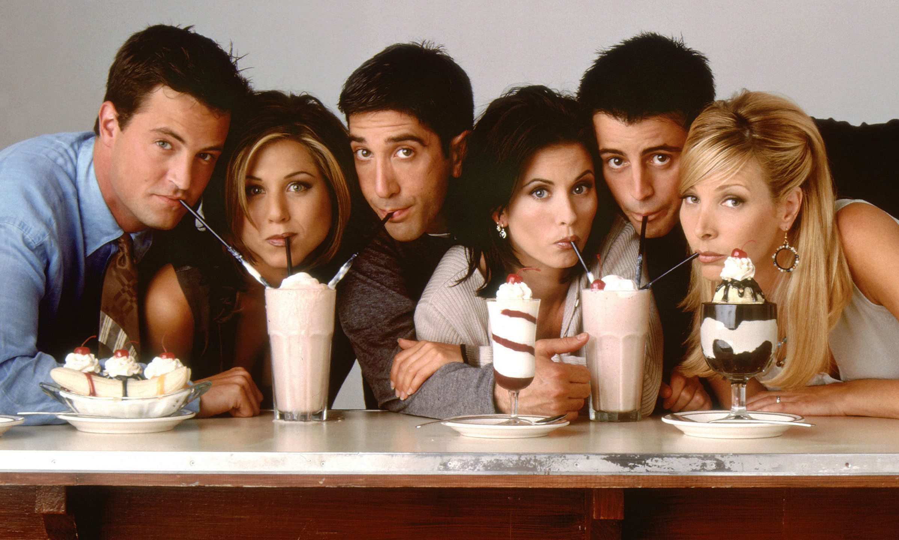

friends The show aired from 1994 to 2004. The show is about 6 friends who live in New Yrok City. The friends are: Chandler Bing (who is player by Matthew Perry), Joey Tribbianie (who is played by Matt LeBlanc), Rachel Green (who is played by Jennifer Aniston), Ross Geller (who is played by David Schwimmer) and Monica Geller (who is played by Courteney Cox). The show discusses all kinds of topics, from relationshsips to bonds with parents. The show was also always way ahead of it's time. So were lesbiens already featured in the first season. And serieuse topics, like problems in relationships, are being discussed in a easy understandable and in a clear way. So there are many more discussed topics, further more on the website.
about the show:
- The show has 236 episodes
- The episodes are 20 min long
- There are 10 seasons
- There are a lot of chracters featured im the show